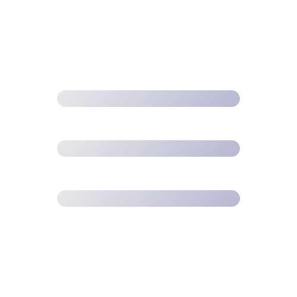

samarth212@gmail.com
484-693-0132
ABOUT ME

My name is Samarth. I am a junior at Downingtown STEM academy eager to apply my skills in computer science and software development to contribute to a company's growth and innovative solutions.
PROFILE
Currently I do not have a job, and am open to a new software engineering, fullstack development, or data analyst opportunities. If you think I'm a good fit, please contant me via samarth212@gmail.com
Full Name:
Samarth Kolanupaka
Birth Date:
February 21, 2007
Age:
16yrs
SKILLS
I am a great teamworker with excellent communication and networking skills, strong in coding and analysis. My main areas of expertise related to computer science are listed below.
> Python, Beautiful Soup and APIs
> iOS development SWIFT, SwiftUI
> SQL Data Analysis
> Java
> HTML and CSS
> JavaScript, React, TypeScript
> MS Office Suite
RESUME
WORK EXPERIENCE
Developer
August 2023 - Present
StudySched
Identified a major issue that my peers were facing: procrastination and the stress it causes. Developed an app that helps students stay organized on on top of their assignments. To learn more, visit the StudySched website: .
Team Lead
September 2023 - Present
AdmitIQ
Led a team and was the main developer for Admit IQ, a website helps students determine their chances of making it into a top 20 college. Incorporated with Downingtown STEM Academy and the counseling department.
Co-Founder
September 2023 - Present
TutoringKidz
TutoringKidz is a non-profit tutoring program aimed at helping young kids in our community grow and develop the skills they need to succeed in STEM fields. Educated 80+ kids of all ages on STEM subjects; Administered organization logistics, tutoring process including assigning meeting dates & tutors; Contributed 50+ hours of volunteer tutoring to kids of all ages; Tutored Python, Math, English, HTML
EDUCATION
High School Degree
September 2021 - June 2025
Downingtown STEM Academy
Attending Downingtown STEM Academy, an IB school, as a junior. Enrolled in HL Analysis and Approaches, HL Physics, HL Economics, HL Design Tech, SL Literature, SL Spanish, SL TOK, with a pathway in Information Systems and Services. Current GPA of 4.7 with high honor roll. Member of the school gifted enrichment program.
MY PROJECTS


ACTIVITIES
Developer
August 2023 - Present

StudySched
Identified a major issue that my peers were facing: procrastination and the stress it causes. Developed an app that helps students stay organized on on top of their assignments. To learn more, visit the StudySched website: .
Team Lead and Developer
August 2023 - Present
AdmitIQ
Led a team and was the main developer for Admit IQ, a website helps students determine their chances of making it into a top 20 college. Incorporated with Downingtown STEM Academy and the counseling department.
State Comittee Member: Outreach
November 2023 - Present
Technology Student Association
Research and contact potential corporate and college sponsors. Provide opportunities to PA-TSA members while expanding PA-TSA's resources and presence. As a regular club member, I competed in several events such as Webmaster, in which we created a website that you can view here: , Software Development, in which we created a Newspaper bias detector: , and coding, in which we were challenged to solve numeorous coding challenges in a limited time.
Competitor
September 2021 - Present
DECA
As a member of DECA, I competed in several roleplay and written events. Pennslyvania State Champion and Internationals Qualifier.
Member
September 2023 - Present
NHS
As a member of NHS, I volunteered over 100 hours of service to various charitable organizations as well as helping the community.
Co-Founder
June 2023 - Present
TutoringKidz
TutoringKidz is a non-profit tutoring program aimed at helping young kids in our community grow and develop the skills they need to succeed in STEM fields. Educated 80+ kids of all ages on STEM subjects; Administered organization logistics, tutoring process including assigning meeting dates & tutors; Contributed 50+ hours of volunteer tutoring to kids of all ages; Tutored Python, Math, English, HTML.
Team Captain
March 2021 - Present
Downingtown West Tennis
Played on the varisty tennis team for all 4 years of highschool. Played in doubles as well as singles. As captain I helped to organize practice as well as out of school hangouts to help build good chemistry and team spirit.
Competitor
2018 - 2022
VEX Robotics
Competed in VEX for 4 years, contributing to the design and construction of the robot as well as being the coder for our team. Nationals level Qualifier in 2021.
Taekwondo
2015 - Present
Champion Martial Arts
Have trained in martial arts since 2015, earning a black belt and currently continuing to earn further degrees. Competed in several tournaments, winning 1st place in forms twice, and 2nd place in sparring. Earned the CMAC Special Recognition Award in 2019 and 2021.
Organizer and Volunteer
November 2018 - Present
Lord's Pantry and SewaDiwali
Partnered with SewaDiwali and The Lords Pantry Food Drive to help host an annual food drive during Diwali for homeless people in our commmunity. Started as a volunteer by handng out flyers and collecting food, then stepped up and became an organizer for the event. Handed out flyers, collected and organized donations to be distributed across 3 neighborhoods, contributing 80+ hours and donating thosands of pounds of food to the unfortunate.
AWARDS, HONORS, CERTIFICATIONS/CERTIFICATES
Thank you for visiting my website!
If you have any questions, feel free to ask me through my email, number, or any of my socials!
Created by Samarth Kolanupaka | Design inspired by Sunwoo Kang and Styleshout
Samarth Kolanupaka
Software Developer | Full-Stack | Data Analyst
background pc: Lake George by Ajay Kolanupaka